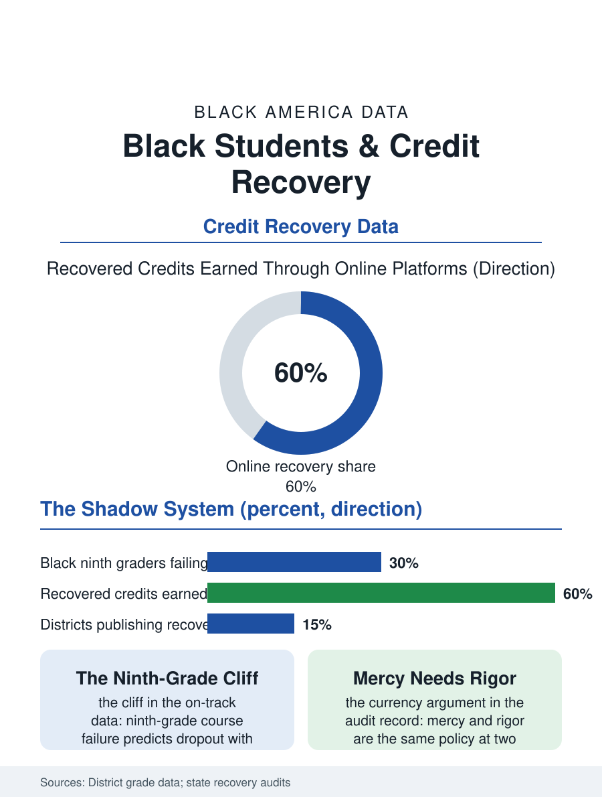

Black Education
The Second Chance's Price: Black Students and Credit Recovery
The second chance that stands between the ninth-grade failure and the dropout, whose rigor decides what the diploma is worth. The credit recovery file.

Credit recovery, the second chance at the failed course, delivered increasingly by software, is the graduation rate's shadow system: Black students repeat courses at the highest rates, recover them at the highest rates, and the recovery's rigor, the question of what the recovered credit certifies, is the accountability file's least examined corner. This article reads the credit recovery file.
The Failure's First Draft
The file begins at the failure itself, whose distribution the grade data draw: the ninth grade is the system's cliff, the failed algebra and English courses of the first high school year predicting the dropout with the accuracy the on-track literature established, and the Black ninth grader's course failure rates run above the system's in the pattern of the whole opportunity file, the failure's causes composing the usual ledger with the transition's own weight, the middle school's preparation meeting the high school's anonymity at the student's most fragile passage. The recovery system exists because the alternative, the repeated year and the aging out, is worse in every data the system keeps, and its scale in the urban districts is industrial: the summer and evening and online recovery programs process the failed credits in the tens of thousands in the large districts, the graduation rate's arithmetic depending on the recovery's throughput in the districts whose four-year rates the accountability file publishes, a dependence the auditors and the journalists periodically discover as if it were a scandal rather than a structure. The transcript audit that the colleges and employers actually run is coarser than the policy debate's, the GPA and the diploma's completion counting for more than the recovered line's provenance in the admissions readers' own accounts, which softens the file's anxiety even as it sharpens the equity question, since the recovery's beneficiaries are precisely the students whose transcripts the audit reads least closely and whose graduation the system counts most loudly.
The Software's Standard
The online recovery course is the file's contested instrument: the vendor platforms' self-paced modules, the student clicking through the compressed curriculum to the passing assessment, deliver the credit at a pace and a price the district's budget loves, and the rigor investigations, the states' audits and the newsroom analyses that sat reporters in the courses themselves, record the variance the price buys, from the legitimately scaffolded to the answer-key farce, with the state's oversight of its own graduation currency varying as widely. The equity file inside the recovery is double: the Black student is both the system's main beneficiary, the second chance standing between her and the dropout file's economics, and its main exposure, her diploma's value in the employer's and the college's reading discounted where the recovery's reputation precedes it, so that the rigor question is not pedantry but the protection of the credential the recovery exists to deliver. The mastery-based alternatives are the file's constructive tier: the competency demonstrations, the portfolio and the examination routes by which the student proves the course's substance rather than serving its time, posting the validity the software's seat time cannot, at the assessor capacity's cost, the old trade between the standard and the scale that the examination files all record.
The Credit's Currency
The credit recovery file closes on the diploma's exchange rate, because a credit is a currency and its issuer's discipline is the graduate's asset: the colleges' admissions readers and the employers' screens price the transcript's recovery lines at the reputation the district's oversight built, so that the system's mercy and the system's rigor are the same policy at two moments, the second chance honored exactly to the extent that it certifies the learning it replaces. The districts that publish their recovery audit results and staff the recovery classroom with the teacher rather than the proctor are the file's evidence that the balance is administrable. The grade data count the failures each June. The file's last entry is the recovered credit's line on the transcript, indistinguishable in typeface from the first attempt's, carrying in that sameness the whole argument: the student's second chance and the diploma's good name, printed in the same ink, each the other's collateral. The credit, in the end, is a promise the district signs.
More in Black Education
Black Educational Attainment: High School Parity, the College Gap
About 89 percent of Black adults hold a high school diploma and one in four holds a bachelor's degree or higher — the attainment ladder, the college completion gap, and the generational trend.
Historically Black Colleges and Universities: Enrollment and Degrees
More than 100 HBCUs enroll roughly 290,000 students and award about one in six Black bachelor's degrees — an outsized share from a small sector. The federal education data.
Black College Enrollment: 2.4 Million Students
About 2.4 million Black students are enrolled in American colleges — nearly two-thirds of them women. The NCES enrollment data by sector, level, and trend.
Source: District course failure and credit recovery data; state auditor and inspector general reviews of online credit recovery.